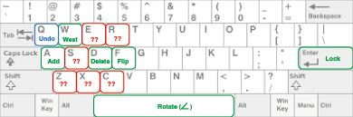

Optionally, cache sequences of actions here, then use them by pressing the corresponding key:
Hint 1 (click to reveal)
Hint 2 (click to reveal)
Try to match the green pattern using the actions. Your action sequence appears below:
These actions are hard coded:
The default cache for these actions are:
Your additions can overlap existing pieces. You complete the puzzle by covering all the green hexes with locked in pieces. You lose a point for each white hex you cover in your final pattern.
Demo options